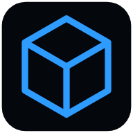

Ölçü Kutusu (Measure Box)
Telefonun sensörleriyle ölçüm araçları: su terazisi (yüzey, çizgi, dikey), ekran cetveli ve açıölçer, kamerayla mesafe, yükseklik ve genişlik, ses ölçer ve ışık ölçer. Her aracın doğruluğu uygulamada yazılıdır; kalibrasyon merkezinde her biri telefonuna göre ayarlanır. Kamera görüntüsü ve mikrofon sesi yalnız telefonda işlenir, kaydedilmez. Ücretsiz, reklamlı; isteğe bağlı reklamsız abonelik. Türkçe ve İngilizce.
Measuring tools that use your phone's sensors: a spirit level, a screen ruler and protractor, distance, height and width by camera, a sound meter and a light meter. Free with ads; an optional ad-free subscription.
Geliştirici: Poyraz Workshop · İletişim: mahmuttari@gmail.com